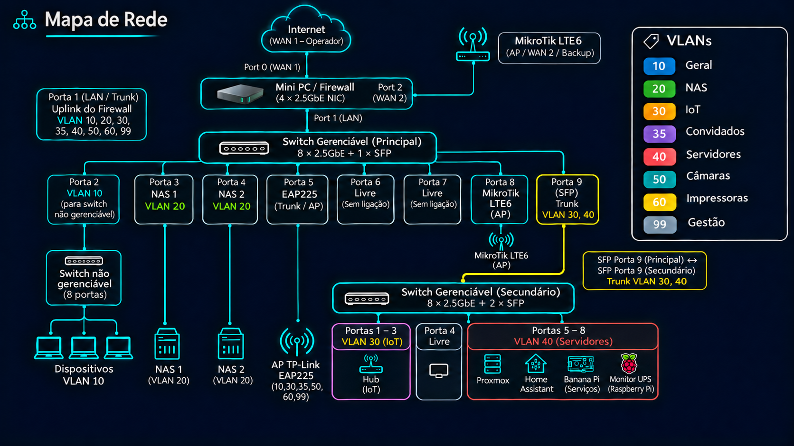
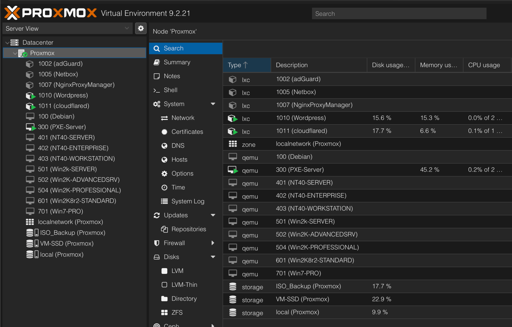

Visão geral
O laboratório integra uma firewall, switches gerenciáveis, equipamentos de armazenamento, servidores virtualizados, automação doméstica e monitorização. Esta estrutura permite experimentar soluções reais e compreender a sua interação.

Áreas principais
Redes e VLANs
Segmentação, portas e equipamentos.
Explorar →Proxmox
Serviços virtualizados e sistemas de teste.
Explorar →Home Assistant
Automação e integração de dispositivos.
Explorar →Homarr
Painel unificado de serviços.
Explorar →Laboratório retro
Windows NT e outros sistemas em máquinas virtuais.
Explorar →Monitorização
Disponibilidade, backups e UPS.
Explorar →Capturas dos serviços

